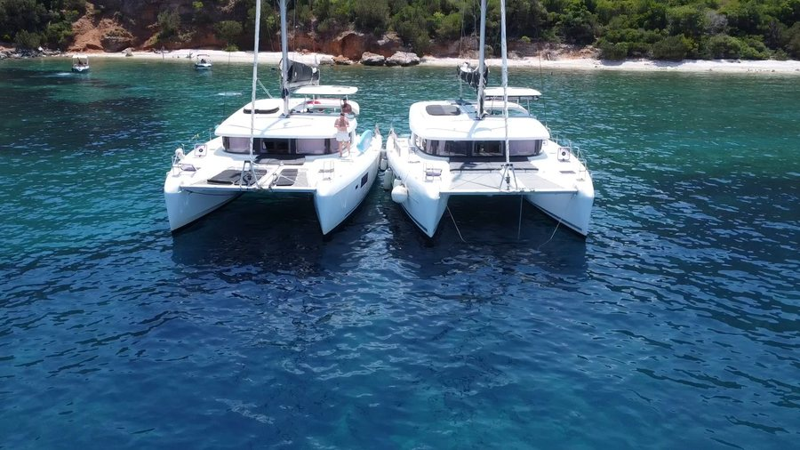

Serenity
Serenity
Гайди
Чи заколисує на катамарані: правда про морську хворобу
Чому на вітрильному катамарані майже не заколисує: конструкція судна, короткі переходи в затишних бухтах і робочі способи адаптації до моря.
6 хв читанняЧитати повністю →
Блог
Усе, що варто знати перед першою морською подорожжю: як підготуватися, що взяти на борт, куди пливти й чому яхтинг — це про спокій, а не про екстрим.

Гайди
Чому на вітрильному катамарані майже не заколисує: конструкція судна, короткі переходи в затишних бухтах і робочі способи адаптації до моря.

Оренда
Від вибору судна й дефектовки до контрактів, депозитів, капітана та провізії «під ключ» — як орендувати яхту без стресу та бюрократії.

Гайди
Чи потрібен досвід, що взяти на борт, як облаштований побут і що таке філософія Slow Living на воді — практичний гайд перед першим виходом у море.